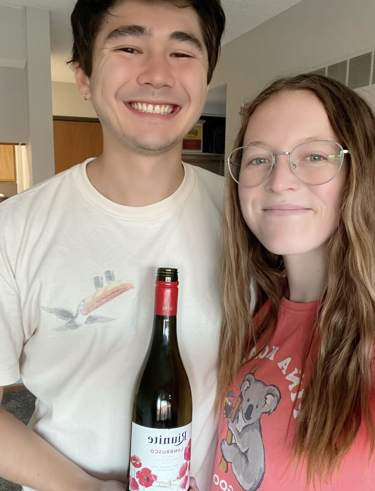

Lambrusco
What is it?
Lambrusco is actually the name of eight varieties of grape that are closely related, as well as the wine that is made from these grapes. Lambrusco wines are generally sparkling, but they can be anywhere from a lighter rosé to a deeper red [2]. Lambrusco wines were once, in the United States, synonymous with the Riunite wine brand (which was the brand of Lambrusco we tried). This style of Lambrusco is known as being on the sweeter side, overtly fruity, and one-dimensional [3]. Here's a link to an iconic Riunite commericial from the 80's if you're interested! (Click here!)
Primary flavors of Lambrusco are strawberry, blackberry, rhubarb, hibiscus, and potting soil [1]. Lambrusco wines are said to pair well with many things, with Italian food being a top suggestion. We had this wine as an apertif. It was as described above - sweet, very fruity, and mostly one-dimensional.
Molly's Rating and Tasting Notes
8.6. I get a lot of grape juice and some strawberry. As the wine hits my tongue, I'm a bit surprised with the sparkling nature of the wine, though it isn't an unwelcome surprise. The wine is very juicy and fruity, though I'm struggling to pinpoint any flavors beside grape and maybe strawberry. The finish also has a big grape juice persona. I'd definitely drink this wine again, and I might even get it for fun.
Ryan's Rating and Tasting Notes
7.9 On the nose I get grape juice, mushroom, and a little bit of ethanol. Upon tasting, the first thing I notice is that it is decently sweet. I get grape, strawberry, and rhubarb as the main flavors. I get some slight umami flavors underneath as well, but that might be from the steak and mushrooms I had for dinner. There's also a slight creaminess as well that is quite nice. The mouth feel is quite nice, with a good amount of bubbliness that keeps it fun and peppy. The finish however, isn't very complex, nor does it stay very long. Overall, not a super interesting wine, but it is quite tasty.
References
[1] Madeline Puckette and Justin Hammack. Wine Folly: The Master Guide. Avery - A Penguin Imprint, New York, NY, 2018.
[2] "Lambrusco." Wine Folly. https://winefolly.com/wines/lambrusco/. Accessed: July 2023.
[3] "Lambrusco — A Guide to the Basics." Food & Wine. https://www.foodandwine.com/wine/champagne-sparkling-wine/lambrusco-wine-guide. Accessed: July 2023.
Wines we haven't finished
- None this week!